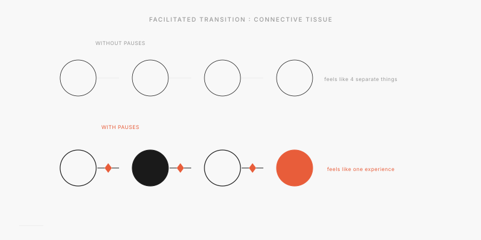

Inclusive Leadership as Narrative Co-Authorship in a Two-Hour Workshop for International Undergraduate Peer Mentors
Lo/Be Lab
About this working paper Author-produced. Documents
the design rationale for the Inclusive Leadership Lab, a two-hour
workshop delivered once to international undergraduate peer mentors at
Dartmouth College on May 22, 2026. No post-workshop survey or follow-up
evaluation was conducted. Comments, citation requests, and counter-evidence
welcome at seth.looper@gmail.com.
Lo/Be Lab · CC BY-NC 4.0
ORCID: 0009-0002-8683-1632
(https://orcid.org/0009-0002-8683-1632)
Inclusive Leadership as Narrative Co-Authorship in a Two-Hour Workshop for International Undergraduate Peer Mentors
Lo/Be Lab · seth.looper@gmail.com · ORCID 0009-0002-8683-1632
Abstract
This paper documents the design rationale of a two-hour mentor-training workshop delivered to international undergraduate peer mentors at Dartmouth College in May 2026, in which inclusive leadership is reframed as narrative co-authorship: the practice of staying anchored in one’s own narrative so that one can hold space for someone else to find theirs. I position this framing as a relational stance rather than the competency cluster that dominates the inclusive leadership literature (Bourke & Espedido, 2019; Hewlett, Marshall, & Sherbin, 2013), and translate the stance into a workshop architecture that adapts Stanford Life Design (Burnett & Evans, 2016) for a non-native-English-speaking undergraduate mentor population. The workshop’s pedagogical signature is a designed sequence combining narrative compression, the Knowdell Career Values Card Sort, and a compressed Odyssey Plan, intended to produce a values-tested anchor word each mentor can carry into the fall match-introductions. An informal pre-workshop check-in, sent by the program office, shaped which modules received the most emphasis; its responses are not reported because they were collected for program planning, not research. I document a set of ESL-conscious design practices developed across an extended iteration cycle (versions one through final), name what was cut for time and why, and offer the workshop architecture as a replicable design vocabulary for practitioners building leadership development for similar audiences. The workshop was delivered once, and no post-workshop survey or follow-up evaluation was conducted; this paper is a design rationale, not an outcomes report.
Keywords inclusive leadership · narrative co-authorship · international undergraduate peer mentoring · ESL-conscious workshop design · Life Design pedagogy · Knowdell Career Values · narrative compression · responsive workshop design · design-based research · workshop pedagogy
International undergraduate peer mentors at U.S. universities occupy a particular pedagogical position. They are themselves international students, often a year or two further into the institution than their mentees, and are recruited to introduce first-year international students to the campus, the institution’s expectations, and the practices that surround academic life. Their work is relational rather than instructional. The mentor’s task is not to deliver information; it is to be present in a way that makes it possible for the mentee to do their own work of orientation, adjustment, and gradual self-positioning in a new context.
Existing leadership training for this kind of role typically draws on the inclusive-leadership literature, which has developed across two decades into a relatively stable competency framework. Inclusive leaders, in this literature, possess (in various combinations and weightings) cultural intelligence, openness to difference, bias awareness, collaborative orientation, and the willingness to give voice to underrepresented perspectives (Bourke & Espedido, 2019; Hewlett et al., 2013; Roberson, 2006). The framework is useful for hiring, for organizational assessment, and for shaping the broader institutional conditions inside which leadership can function inclusively. It is less useful as a teaching object for an undergraduate mentor about to sit across from a quiet first-year mentee in late September. The competency list does not tell the mentor what to do, in that room, when the person across from them is anxious.
This paper documents a two-hour workshop, the Inclusive Leadership Lab, that was developed and delivered for approximately twenty international undergraduate peer mentors at Dartmouth College on May 22, 2026. The workshop was delivered at the invitation of Dartmouth’s International Student Experience Office; this paper is the author’s own and is not endorsed by Dartmouth. It was designed as preparation for the fall 2026 mentor-mentee match-introductions. Its central pedagogical move is to reframe inclusive leadership, for this population and purpose, as narrative co-authorship: the simultaneous practice of staying anchored in one’s own narrative and holding space for someone else to find theirs. The frame is not a description of what inclusive leaders are; it is a description of what inclusive leadership does, in the room, in real time, when a mentor sits with a mentee who is not yet ready to speak.
Within the lab’s broader research program, this workshop addresses RQ 3 (whether reflective practice can improve how people relate and deliberate together) and RQ 5 (what is specific to a population or discipline, and what is universal, when adapting reflection tools), here for international undergraduate peer mentors.
The paper makes five contributions, each developed in Section 6: the narrative co-authorship reframing, a two-clause definition (anchor + hold space) of inclusive leadership as a relational stance (6.1); a population-specific adaptation of Stanford Life Design methodology (Burnett & Evans, 2016) for non-native-English-speaking undergraduate mentors (6.2); a set of ESL-conscious workshop design practices offered as a transferable design vocabulary (6.3); a check-in-informed design method, in which an informal pre-workshop check-in sent by the program office shaped the workshop’s framings (6.4); and a designed sequence of narrative compression, the Knowdell Career Values Card Sort, and a compressed Odyssey Plan that produces a values-tested anchor word each mentor can carry into the fall (6.5).
This paper does not report post-workshop outcomes. The workshop was delivered once, in May 2026. No post-workshop survey or follow-up evaluation was conducted, and the author’s Dartmouth role ended in September 2026. The paper is a design rationale; it makes claims about what the workshop was designed to do and why those design choices were made. It does not make claims about what the workshop produced.
The paper proceeds as follows. Section 2 develops the theoretical background across four literatures: inclusive leadership, narrative identity, Life Design pedagogy, and ESL-conscious learning design. Section 3 describes the design-based research methodology that frames the workshop’s iterative development and the pre-workshop check-in. Section 4 describes the workshop architecture in detail: three acts, three modules, the deck and worksheet, and the fourth module that was cut for time and the closing design move that named the cut. Section 5 describes how the pre-workshop check-in served as a design input. Section 6 discusses what the workshop’s design implies for inclusive leadership pedagogy more broadly, develops each contribution, and acknowledges what the design rationale cannot yet claim. Section 7 names limitations and the empirical work the design opens.
The workshop’s design draws on four intersecting literatures. I sketch each here at the level needed to motivate specific design decisions, with full references in the References section.
The inclusive-leadership literature has developed across roughly two decades from broader work on diversity and inclusion in organizations. The dominant framing positions inclusive leadership as a competency cluster: a set of capacities a leader possesses that, in combination, produce inclusive practice. Bourke and Espedido (2019), reporting on a study of approximately a hundred companies, identified six signature traits of inclusive leaders: commitment, courage, cognizance of bias, curiosity, cultural intelligence, and collaboration. Hewlett, Marshall, and Sherbin (2013) developed an earlier framework focused on six signature traits as well, with an emphasis on the relationship between leader behavior and team innovation outcomes. Roberson (2006) provided the conceptual ground for both, distinguishing diversity as compositional from inclusion as relational and processual.
The competency framing is useful for the purposes for which it was developed: assessing leaders at scale, identifying gaps in organizational leadership pipelines, training programs that build the capacities the framework names. It is less useful as a teaching object for the situation an undergraduate mentor is preparing for. The mentor is not being assessed; they are about to sit with another undergraduate. The framework’s signature traits are largely framed as enduring leader characteristics rather than as moment-to-moment practices, and the move from possessing curiosity to doing curiosity in the room with a quiet mentee is left implicit.
The workshop’s reframing redirects the competency literature rather than critiquing it. I argue that, for the specific population of international undergraduate peer mentors preparing for relational mentoring work, inclusive leadership is more usefully framed as a stance than as a set of traits. The stance has two clauses, both required. The first clause is to stay anchored in one’s own narrative: to be in the room with a sufficiently clear sense of who one is and what one cares about that the mentee’s anxiety does not destabilize the mentor. The second clause is to hold space for the mentee to find their own narrative: to ask without telling, to wait without filling silence, to stay present without taking over. The combination is what I call narrative co-authorship, and it is the workshop’s central pedagogical claim.
The reframing draws conceptually on broader work in inclusive higher education on engagement, belonging, and identity (Glass & Westmont, 2014; Glass, Wongtrirat, & Buus, 2015), and on the mentoring literature’s emphasis on developmental relationships (Crisp & Cruz, 2009; Kram, 1985; Ragins & Kram, 2007). It also draws on the reflective practice tradition (Schön, 1983) and on Brookfield’s (1995) account of the peer as a mirror that can surface what the self cannot, both of which inform the workshop’s emphasis on facilitator restraint and on table-share dialogue as the engine of the mentor’s anchor work. The contribution I make is a specific move that I believe is not yet articulated in either the inclusive leadership or mentoring literature as a single named pedagogical claim: that inclusive leadership, for mentor preparation, should be taught as the simultaneous practice of two clauses that have to hold at the same time, with the failure modes of each (anchor without holding space, hold space without anchor) explicitly named.
The workshop’s anchor work draws on narrative identity theory, particularly the line of work developed by Dan McAdams (1993, 2001) and the broader narrative tradition (Bruner, 1991). Narrative identity theory treats identity as the story a person constructs and continuously edits about who they are, where they came from, and where they are going. The story is not a description of an identity that exists prior to the narration; the story is the operating epistemology of the self. The implication for the workshop’s anchor exercise is direct: building an anchor is the work of editing a narrative one already has, not the work of finding an identity one does not yet possess.
The narrative frame matters for the workshop’s compression exercise in two specific ways. First, it explains why compression-via-deletion is cognitively cheaper than synthesis-from-scratch (Looper, 2026d, on this method’s foundation in Narrative by Design). Starting from a paragraph that contains too much and cutting away to a single word is structurally easier than starting from a blank page, because the cutting forces the student to choose what survives the next cut. The cutting is the editing operation McAdams’s framework names. Second, the narrative frame justifies the workshop’s anchor-as-temporary-hypothesis stance. The anchor word is not a permanent identity claim; it is a current best edit of an ongoing narrative. The workshop teaches the editing operation, not the conclusion.
McAdams’s empirical literature documents that narrative identity becomes more coherent and more reflective across young-adult development, and that this development is itself shaped by the contexts in which narrating happens. For international undergraduates in particular, the workshop assumes that the narrating context has been complicated by competing narratives that may not fully belong to the student: a family expectation, a visa story, an institutional script. The international-student literature documents that the contextual stressors complicating narrative coherence for this population are substantial and varied (Yan & Berliner, 2013). The anchor work is positioned as a method for surfacing which narratives a student can defend with their own evidence, and which are scripts they have been carrying. The exercise is, in Mezirow’s (1997) framing, a structured invitation into a productive disorientation: the mentor encounters the gap between the narrative they have been carrying and the values their own evidence supports, and the gap is the developmental work.
The workshop’s third module, the Odyssey Plan, adapts the prototyping methodology developed by Burnett and Evans (2016) at the Stanford Life Design Lab. The original Odyssey Plan asks the participant to sketch three radically different five-year possible lives, each with a timeline, a six-word title, a dashboard of energy and confidence indicators, and a set of curiosity questions. The methodology is grounded in a broader argument that career and life decisions benefit from being approached with the prototyping discipline that designers apply to physical products: build many cheap drafts, learn from each, and let the prototyping process surface preferences that the planner would not have been able to articulate in advance.
The workshop’s adaptation of the Odyssey Plan makes one specific redirection. In the original, the prototype is for the individual’s own life; the prototyping discipline is the methodological contribution. In the workshop, the prototyping is positioned as practice for the cognitive flexibility the mentor will need in September. The framing of the M3 module is explicit on this point: a mentor who has sketched three of their own possible lives is a mentor who can spot fear-editing in a mentee who has not yet allowed themselves to consider more than one possible life. The Odyssey Plan, in this redirection, is meta-pedagogical: the mentor learns by doing the exercise for themselves, then is prepared to recognize the same exercise’s failure modes in a mentee.
The adaptation is in the spirit of the original. Burnett and Evans have themselves addressed mentor populations in various extensions of their work; what I add is a population-specific framing for international undergraduates and a specific redirection of the methodology toward mentor purpose. The lineage of the adaptation traces back further to the design pedagogy from which Burnett and Evans’s work descends: IDEO (Brown, 2009), and behind it the Bauhaus and the broader European modernist tradition of learning-by-doing in workshop settings (Itten, 1963), and behind that the broader pedagogy of design schools that take prototyping as the central teaching move. Here I name the lineage briefly and continue.
The fourth literature the workshop draws on is the broader research on cognitive accessibility for non-native-English-speaking audiences. The foundational distinction comes from Cummins’s (1979) work on the difference between basic interpersonal communication skills (BICS) and cognitive academic language proficiency (CALP). Students who present as fluent in everyday social English may still face significant cognitive load when processing academic English under time pressure, particularly when the academic English contains idioms, compound subordinate clauses, or culturally specific references that require additional inferencing work.
The workshop’s design assumes that its audience has high social English fluency and varied levels of CALP, and treats this as a design constraint rather than as a deficit to be remediated. The specific design moves the workshop makes in response to this constraint are documented in detail in Section 4 and summarized as a contribution in Section 6. They include capping sentence length in speaker notes, removing idioms (no “hit the ground running,” no “elephant in the room,” no “deep dive”), using contractions selectively for naturalness without informality, aligning slide text with speaker notes so that the audience can read while listening, replacing pair share with table share to reduce individual performance pressure, and preserving consistent visual hierarchy across module boundaries.
The framing is important. The workshop does not treat ESL as a language gap to be bridged through plain-language translation; it treats it as a design constraint that requires specific design practices. The distinction matters because plain-language translation typically reduces information density, whereas ESL-conscious design can preserve conceptual density while reducing cognitive parsing load. The contribution I make in Section 6 is not the practices themselves (most are documented in the broader ESL teaching literature) but their consolidation as a transferable workshop design methodology.
Positionality. The workshop was designed and facilitated by the author; the observations reported here are the facilitator’s from a single delivery, not independent or human-subjects measurement, and the author has a clear stake in the design’s success. The account should be read as a formative, falsifiable design argument, and the open questions in Section 7 are stated so that an independent party could test them.
This paper documents the workshop’s design rationale and intended operations. The workshop was delivered once, on May 22, 2026, to approximately twenty international undergraduate peer mentors at Dartmouth College. The delivery has been observed in facilitator-led documentation; the artifacts described in this paper (the deck, the worksheet, the slide notes, the iteration history) are real and available for review. No IRB-reviewed consent process or formal human-subjects research protocol was in place. The pre-workshop check-in was sent by the program office for program planning, not research, and its responses are not reported. No post-workshop survey or follow-up evaluation was conducted.
The workshop’s development followed a design-based research methodology (Brown, 1992; Design-Based Research Collective, 2003) in which the workshop is treated as a designed artifact whose rationale can be documented and revised. The approach is consistent with the broader Lo/Be Lab program, which treats designed prototypes as objects of ongoing design revision rather than as one-time deliverables (Looper, 2026f, on the broader four-part framework that organizes the lab’s prototype work). The specific iteration cycle for this workshop is documented in Section 3.4.
Three commitments of the design-based research tradition organized the workshop’s development. First, design and theory should develop together: each iteration of the design should produce a more articulate version of the theoretical claim the design is testing, and the theoretical claim should generate the next iteration’s specific design moves. Second, design occurs in the contexts where the intervention is intended to operate: the workshop was developed for a specific population (international undergraduate peer mentors at Dartmouth), for a specific purpose (preparing for fall mentor-mentee match-introductions), and at a specific institutional moment (the end of spring term, before the summer break). Third, the design’s claims are open to revision based on the design’s operation in context: the workshop documented in this paper is one iteration of the methodology, delivered once, and no post-workshop data were collected to inform a revision.
About 48 hours before the workshop, the program office sent mentors an informal pre-workshop check-in about what they hoped to get from the session and what concerned them about the fall. The check-in was collected for program planning, not research, and its responses are not reported in this paper. It served as a design input, described in Section 5.
The workshop’s deck was iterated through fifteen named versions plus a student-reviewed near-final version and a final delivery version. The iteration history is documented internally; here I name the most consequential decisions, each developed further in Section 4.
First, an originally-planned fourth module (Mentor Practice, a question-only roleplay practice block) was cut for time when the deck’s full slide architecture timed at approximately 135 minutes against the 120-minute workshop window. The cut became its own design move (Section 4.6). Second, the opening was restructured from an earlier hook-question opening to a Title → Goal → Arc sequence that hands off cleanly to Module 1 without pre-delivering Module 1’s content. Third, the speaker notes were trimmed across the deck for sentence length, contractions, idiom removal, and ESL parseability (Section 4.7). Fourth, a student reviewer proposed a stronger conceptual version of one of the M1 table-share questions, which was tested against the deck’s overall ESL accessibility constraint and reverted to the simpler V6 version for the final delivery (Section 4.3). Fifth, a “translation slide” was added between deck versions 14 and 15 that explicitly maps the concerns mentors raised in the pre-workshop check-in to workshop modules (Section 5).

The workshop is organized in three acts that map onto a developmental arc: invitation, anchor build, offering (Figure 1). Within the arc, three modules carry the substantive pedagogical work; a planned fourth module was cut for time and its absence was named explicitly in the closing. The full delivery used a 41-slide deck and a three-page worksheet. I describe each component below.
The workshop’s three acts are deliberately not framed as three modules. The acts are pedagogical states that the workshop creates in sequence; the modules are the content blocks that move the audience through the acts.
The first act, invitation, opens the workshop. Its job is to land the audience in the room, establish the stakes, and hand off cleanly to the substantive work. The first act includes the title slide, the facilitator’s personal narrative, a recap of the pre-workshop check-in, and the workshop’s two-outcome goal statement. The first act ends with the M1 module divider, which begins the second act.
The second act, build your anchor, is the workshop’s longest and most pedagogically dense block. It includes M1 (the reframe), M2 (the compression and card sort), the dinner break, and M3 (the Odyssey Plan). The second act’s purpose is to build a tested anchor that the mentor can carry into the fall.
The third act, offer your anchor, is the closing. It is intentionally short. Its job is to consolidate what the workshop has produced for each mentor and to hand off cleanly to the September match-introductions. The third act includes the closing’s check-in recap, the workshop’s reflection from facilitator experience, and the carry-forward statement that asks mentors to bring their anchor word into their first conversation with their mentee.
The opening is unusually personal. Most leadership workshops open with a framework or with a definitional question. This workshop opens with the facilitator’s biography, framed as evidence for the workshop’s central claim that lived narrative is the source of leadership identity. The facilitator’s narrative covers an architectural practice background, a pivot through international education consulting, the pandemic-era transition into higher education career advising, and the author’s role at the time at Dartmouth’s Center for Career Design (a role that ended in September 2026). The narrative is told in approximately ten minutes; the design intent is that the audience can see, in the facilitator’s biography, what the workshop is asking them to do for themselves.
The opening is followed by a recap slide drawn from the pre-workshop check-in, and by a goal slide that articulates the workshop’s two outcomes: an anchor (for the mentor), and a question (for the mentee). The goal slide is deliberately concrete. The workshop does not promise transformation, certainty, or a finished personal story. It promises two specific deliverables, both of which the mentor can carry into the fall.
The first module’s pedagogical job is to surface the inherited leadership model that mentors have absorbed and to make space for the workshop’s reframe. The module opens with a question slide (“What is leadership?”) and a brief discussion of the inherited model: leadership as charismatic, visible, and validated. The slide is followed by a table share in which mentors discuss three questions in three-minute rounds. The table-share format is itself a deliberate pedagogical choice in Shulman’s (2005) sense of a signature pedagogy: it is the form by which the work of the workshop happens, not a delivery vehicle around the work. The questions are designed to surface the mentor’s own leadership history, the leaders they have seen in their own lives, and the leadership their mentees may currently be carrying.
The third table-share question is an instructive case of the workshop’s ESL accessibility trade-off. A student reviewer late in the iteration cycle proposed a stronger compound version of the question: Based on your own experience, what kind of leader and mentor did you need most, and is that what your mentee needs from you? The compound question is conceptually richer: it forces the mentor to triangulate between their own experience and the mentee’s needs. But it is also structurally heavier: 28 words, two clauses, a comparison that requires holding two perspectives in mind simultaneously. The simpler version that was retained for delivery (Think of one mentee. What definition of leadership are they carrying right now?) is conceptually narrower but structurally lighter: 16 words, one clause, one perspective to hold. For a three-minute table share with ESL participants, parseability was prioritized over conceptual depth. I document the trade-off as a design move that is likely to recur across ESL-conscious workshop design.
After the table share, M1 introduces the workshop’s reframe: inclusive leadership is staying anchored in your own narrative so that you can hold space for someone else to find theirs. The reframe is delivered as a two-clause definition, with each clause explicitly named and the failure mode of each (anchor without holding space, hold space without anchor) discussed briefly. A famous-leaders photo collage follows: Steve Jobs, Gandhi, Lincoln, Mandela, Marie Curie. The slide carries no captions. The speaker note instructs the facilitator to let the audience look in silence. The pedagogical move is restraint: the audience is asked to notice their own recognition of the figures, which surfaces the inherited model the workshop is reframing. M1 closes with a bridge slide to M2, articulating why narrative is the appropriate developmental frame for the anchor work.
Module 2 is the workshop’s substantive pedagogical core. It runs a four-step sequence: a compression funnel, a Knowdell Career Values Card Sort, a comparison of the compression’s output against the card sort’s evidence, and a brief reflection.
The compression funnel begins with a 90-second brain dump: mentors write an unfiltered paragraph answering the question Tell me about yourself. The instruction is explicit that the paragraph should not be polished; it should be the way the mentor would actually talk if asked the question at a coffee shop. The brain dump is followed by a 3-minute compression to one sentence (the mentor cuts the paragraph to a sentence), and then a 3-minute compression to one word (the mentor cuts the sentence to a single word). The compressed word is the candidate anchor.
The compression funnel is grounded in the broader Lo/Be Lab methodology developed for Narrative by Design (Looper, 2026d) and articulated as a transferable method in the lab’s Compression as a method field note. The pedagogical logic is that compression-via-deletion forces prioritization in a way that synthesis-from-scratch does not. Starting from a paragraph that already exists and cutting away is structurally easier than starting from a blank page, and the cutting is where the developmental work happens. The compressed word is not framed as a brand, an identity claim, or a permanent label; it is framed as a candidate anchor that the next phase of the workshop will test.
The Knowdell Career Values Card Sort is the test. Mentors are given a deck of 41 values cards and asked to sort them into five piles (Always Valued, Often Valued, Sometimes Valued, Seldom Valued, Never Valued) with a forced top-five at the Always Valued pile. The sort is timed at 12 minutes. The discipline of the forced top-five is the exercise’s primary pedagogical move: any five-card pile is too small to include everything the mentor finds important, so the sort forces a choice. The Knowdell instrument is well-established in career counseling practice; the workshop uses it not as a career assessment but as a values evidence layer.
The comparison step is the pedagogical climax of M2. Mentors compare their candidate anchor word against their top-five Knowdell cards. Two outcomes are possible. If the word and the top five align, the workshop frames the anchor as values-tested and the mentor carries it forward. If the word and the top five contradict, the workshop frames the gap as the data: the word came from somewhere else, the cards represent the mentor’s unfiltered values response, and the contradiction surfaces something the mentor would not have surfaced through either exercise alone. The two outcomes are presented as equally valid; neither is preferred. The workshop’s slide on this point (“The discomfort is the data”) is one of its most carefully designed: the visual layout shows both outcomes side by side with equal weight, and the speaker note explicitly instructs the facilitator not to privilege the contradiction outcome as more important than the alignment outcome.
The framing matters pedagogically because it keeps the inquiry open. Earlier drafts of the slide framed the contradiction outcome as the “doorway” to the real word. The final version weights both outcomes equally. The reason for the change is that privileging contradiction would have produced a confirmation game: mentors would learn that the workshop expected contradiction, and would manufacture it. Equal weighting keeps the comparison a fair evidence test.
M2 closes with a brief reflection on the worksheet and a dinner break. The dinner break is explicitly designed as marination time: mentors are instructed not to discuss their compressed word during the break.
The third module adapts the Stanford Life Design Odyssey Plan (Burnett & Evans, 2016), by way of an earlier program-level adapted Odyssey worksheet, for the workshop’s mentor preparation purpose. The original Odyssey Plan asks the participant to sketch three radically different five-year possible lives. Each life has a timeline, a six-word title, a dashboard of energy and confidence indicators, and a set of curiosity questions. The methodology is grounded in a broader argument that prototyping discipline applies to life decisions as effectively as to product design (Brown, 2009; Burnett & Evans, 2016).
The workshop’s adaptation makes one specific redirection. In the original Odyssey Plan, the prototype is for the participant’s own life. In the workshop, the prototype is positioned as practice for the cognitive flexibility the mentor will need in September. The pedagogical claim is meta: a mentor who has sketched three of their own possible lives is a mentor who can recognize fear-editing in a mentee who has not yet considered more than one life. The module’s framing slide is explicit on this point and stress-tests the anchor word from M2 against three different five-year futures. Which life has the most energy? Which has the lowest confidence but the most curiosity? The questions are positioned not as planning prompts but as readiness diagnostics for the mentor’s fall work.
M3 closes with a brief share-out: mentors pin their three sketches and walk the room to look at others’. The pin-up format is borrowed from architectural studio pedagogy and is intended to make the prototyping discipline visible across the cohort.
A fourth module was planned for the workshop’s original architecture. M4 was to be a 25-minute roleplay practice block in which mentors would practice the question-only stance in pairs across three scenario cards (a quiet mentee, a culturally-distant mentee, a mentee in distress). The module would have moved the workshop from the M1-M2-M3 anchor work into actual mentor behavior practice.
When the deck’s full slide architecture timed against the 120-minute workshop window, the architecture came in at approximately 135 minutes. The fifteen-minute overrun could not be absorbed within any single module without compressing the M2 sequence to a point where the comparison step would not work. The decision was made to cut M4.
The cut is named explicitly in the workshop’s closing slides. The pedagogical move is to name what was not delivered. The closing slide reads (paraphrased from the speaker notes): We were going to practice the question-only stance tonight. We didn’t have time. Here are two options for what to do this summer instead: pair with a friend and practice the stance with low stakes, or commit to spending the first five minutes of your first fall conversation in question-only mode and see what happens.
The acknowledgment of the cut is itself a design move. Most workshops paper over content they did not deliver. This workshop names the gap, offers two specific practice options, and carries the gap forward into the workshop’s broader pedagogical claim that acknowledging what one did not do is itself a form of integrity that mentor work depends on. The closing’s final slide is titled A Reflection. It carries no slide content. The speaker note instructs the facilitator to speak from experience. The pedagogical move is to trust the room: by minute 115 of a 120-minute workshop, the facilitator-audience rapport is the strongest teaching tool available, and a final data slide cannot compete with the facilitator’s direct address.
The workshop’s deck is 41 slides. The deck was iterated through fifteen named versions plus a student-reviewed near-final version (V7) plus the final delivery version (Final). The iteration history is documented internally; here I name only the most consequential decisions.
Speaker notes were capped at approximately 70 to 100 words for most slides, with one exception that survived to delivery (Slide 20, the Compression Funnel introduction, which contains 366 words because the funnel requires extended explanation of each phase). Speaker notes were trimmed for sentence length (capped at approximately eighteen words where possible), idiom removal (no “hit the ground running,” no “elephant in the room,” no “deep dive”), and contractions (“I’m going to” rather than “I am going to” for naturalness without informality). Slide text and speaker notes were aligned across the deck so that the audience could read while listening, which I treat as a specific ESL-conscious design move (Cummins, 1979).
The worksheet is three pages. Page one carries the workshop’s title block, the tonight’s-goal statement, and the M1 table-share questions. Page two carries the M2 Compression Funnel as a guided writing exercise with explicit time markers (90 seconds, 3 minutes, 3 minutes) and writing space for each compression. Page three carries the M2 test-the-word section with a list of the top five Always Valued cards and a comparison question (yes / partially / no) followed by an open reflection space. The worksheet does not include a M3 Odyssey Plan template; that exercise was conducted on separate Stanford-format sheets and on the slides themselves. The absence of a M3 worksheet artifact is a known gap in the design that any future iteration would need to address.
An informal pre-workshop check-in, sent by the program office about 48 hours before the workshop, shaped which modules received the most emphasis. Its responses are not reported here because they were collected for program planning, not research.
The check-in’s clearest design consequence is documented in the deck’s iteration history: a “translation slide” added between deck versions 14 and 15. The slide maps the concerns mentors raised to the module that addresses each one, and it sits near the front of the deck to give mentors an explicit warrant that the workshop’s content responds to what they said. The closing returned to the same concerns. I treat this use of a check-in as a design move and develop it further in Section 6.
The workshop’s design implies several broader claims about inclusive leadership pedagogy. I develop each contribution briefly here.
The workshop’s central reframing positions inclusive leadership, for the specific population of international undergraduate peer mentors preparing for relational mentoring work, as the simultaneous practice of two clauses: stay anchored in your own narrative, and hold space for someone else to find theirs. The reframing moves inclusive leadership from a competency cluster (a set of traits a leader possesses) to a relational stance (a simultaneous practice that the leader does, in the room, in real time). The reframing is offered as a complement to, not a replacement for, the broader competency literature (Bourke & Espedido, 2019; Hewlett et al., 2013). The competency framework remains useful for organizational assessment, for hiring, and for shaping institutional conditions. The stance framework is more useful, I argue, for teaching specific pedagogical moves to undergraduates about to mentor other undergraduates.
The stance framing generates specific pedagogical moves that the competency framing does not. The two clauses (anchor + hold space) are taught simultaneously, with the failure modes of each (anchor without holding space, hold space without anchor) explicitly named. The workshop’s specific exercises (compression, card sort, Odyssey Plan) are built to operationalize one or the other clause: the compression and card sort build the anchor; the Odyssey Plan stress-tests it; the planned but cut M4 would have practiced the holding-space stance directly. The resulting framework is generative for design: any workshop designer who accepts the stance framing can ask, of a candidate exercise, whether it builds the anchor, stress-tests the anchor, practices the holding-space stance, or does none of the above and should be cut.
The workshop’s Odyssey Plan adaptation demonstrates a population-specific use of Stanford Life Design methodology for international undergraduate peer mentors. The original Odyssey Plan is positioned for individuals designing their own lives (Burnett & Evans, 2016). The workshop’s adaptation redirects the methodology for mentor preparation: the prototyping is practice for the cognitive flexibility the mentor will need when their mentee brings a constrained imagination to a conversation in September. The redirection is in the spirit of, not a critique of, the original; what I add is the explicit naming of the methodology as meta-pedagogical (the mentor learns the prototyping discipline by doing the exercise for themselves, then is prepared to recognize the same discipline’s failure modes in others) and the specific framing of the exercise as readiness preparation rather than as personal planning.
The workshop’s design choices for ESL accessibility consolidate as a transferable methodology. I name seven specific design moves: sentence-length caps in speaker notes (approximately 18 words where possible); idiom removal across all written and spoken content (no “hit the ground running,” no “elephant in the room,” no “deep dive”); selective contraction use for naturalness without informality; slide text and speaker note alignment so the audience can read while listening; table share rather than pair share to reduce individual performance pressure; consistent visual hierarchy across module boundaries; and forced choice of conceptual depth versus parseability where the two conflict (with parseability preferred for time-constrained exercises like the three-minute table share).
The contribution is the consolidation of these practices as a methodology, not the practices themselves. Most are documented in the broader ESL teaching literature (Cummins, 1979). What I offer is their named consolidation as a transferable workshop design vocabulary that can be applied across leadership training, career development, mentor preparation, and other workshop genres for non-native-English-speaking audiences. The methodology treats ESL as a design constraint rather than as a language gap to be remediated; the distinction matters because the resulting design preserves conceptual density while reducing parsing load.
The pre-workshop check-in was used to change what the workshop taught, not only to prepare the facilitator. Most pre-workshop check-ins are used to learn what an audience wants; the workshop used the check-in to change what it teaches. The most explicit example is the translation slide added between deck versions 14 and 15, which mapped the concerns mentors raised to workshop modules. The workshop’s closing also returned to those concerns.
I offer check-in-informed design as a transferable methodological move. The practice is not new, but its explicit articulation as a design move (the check-in changes the workshop, not just the facilitator’s preparation) is worth naming. The method is simple to apply: send a short check-in to the audience approximately 48 hours before the workshop; identify the two or three findings that most directly contradict or complicate the workshop’s planned framing; redesign the workshop’s framing slides to respond to those findings; document the redesign in the deck’s iteration history so that the workshop’s responsiveness to its audience is auditable.
The workshop’s pedagogical signature is a designed sequence of three established frameworks (narrative compression, the Knowdell Career Values Card Sort, and an adapted Odyssey Plan) run in a specific order. Each framework is well-established individually, but the sequence as a single workshop pedagogy is, to my knowledge, not yet documented. The order matters: the compression’s output (a candidate anchor word) becomes the card sort’s input (a test against values evidence), and the comparison’s output (a tested anchor + any gap) becomes the Odyssey Plan’s stress-test input. The sequence produces a single comparable output (a values-tested anchor word that has survived three different forms of pressure) that each mentor can carry into the fall.
The sequence is offered as a replicable design vocabulary. Practitioners building workshops for similar populations (relational professionals preparing for high-stakes first encounters) can borrow the structure: compress to a single defended word, test that word against evidence the participant cannot easily script, stress-test the tested word against multiple futures, and carry the anchor forward. The sequence is generative without being prescriptive: the specific instruments can vary (different card sorts, different prototyping frameworks, different compression formats), but the sequencing logic (compress → test → stress-test → carry) is the methodology I document here.
The workshop was a single delivery. No post-workshop survey or follow-up evaluation was conducted, and the paper reports no participant data. The paper does not report whether the workshop produced the anchor words it was designed to produce, whether mentors carried those anchors into the fall, whether the holding-space stance held under pressure when mentees retreated into silence, or whether the workshop’s design moves outperformed alternative workshop designs for the same population. Those questions remain open.
The current paper’s claims are accordingly scoped. I claim that the workshop was designed in response to an informal pre-workshop check-in, that the design rationale is articulable as the contributions in Sections 6.1 to 6.5, and that the design vocabulary is replicable for similar populations. I do not claim that the workshop is empirically validated, that the design moves are proven effective, or that the methodology generalizes beyond the specific population for which it was designed. No post-workshop survey or September follow-up was conducted, and the author’s Dartmouth role ended in September 2026.
The workshop is a single delivery with a single facilitator at a single institution. Replicability across institutions is untested. No participant data are reported. The deck’s iteration history is documented by the author; no independent design audit has been conducted. The student review (the V7 version) provided one form of external design input but is not a substitute for a broader design review.
Several future research lines are specifically opened by the design. First, the workshop’s stance framing predicts that mentors who develop the anchor will report lower fall mentee-engagement fear than mentors who do not; a post-workshop survey, reviewed by an IRB, could test this prediction. Second, the workshop’s two-outcome framing (match versus contradiction in the M2 comparison) predicts that both outcomes produce useful developmental work; a post-workshop survey could ask mentors which outcome they experienced and how they understood it. Third, the workshop’s ESL-conscious design practices may transfer to other workshop genres for similar populations (mentor training for non-international populations, career exploration workshops for ESL graduate students, leadership development for international graduate teaching assistants); that transfer is untested.
The most consequential open step is a second delivery. Single-delivery findings are not findings; they are anecdotes with a design rationale. No second delivery is scheduled, and the author’s Dartmouth role, under which the workshop was delivered, ended in September 2026. The Lo/Be Lab framework treats prototypes as instruments that iterate across multiple deliveries (Looper, 2026f); this workshop had one delivery.
The case across this paper is twofold. First, inclusive leadership, for the specific population of international undergraduate peer mentors preparing for relational mentoring work, is more usefully framed as a stance than as a competency cluster. The stance has two clauses, both required: stay anchored in your own narrative; hold space for someone else to find theirs. The two-clause framing generates specific pedagogical moves and accommodates the relational reality of mentor work in a way that the competency framing does not. Second, the workshop’s design rationale, without post-workshop evaluation, consolidates into the replicable design vocabulary set out in Section 6.
The workshop documented here is one delivery. Whether the design rationale survives contact with multiple cohorts, multiple facilitators, multiple institutions, and adversarial reviewers is an open empirical question. This paper is a design rationale, not an outcomes report.
Lo/Be Lab welcomes collaboration on any of the open research lines described in Section 7, particularly from international student affairs, mentor training, and leadership development practitioners equipped to adapt the design for adjacent populations. Inquiries can be directed to seth.looper@gmail.com.
Bourke, J., & Espedido, A. (2019). Why inclusive leaders are good for organizations, and how to become one. Harvard Business Review. https://hbr.org/2019/03/why-inclusive-leaders-are-good-for-organizations-and-how-to-become-one
Brookfield, S. D. (1995). Becoming a critically reflective teacher. Jossey-Bass.
Brown, A. L. (1992). Design experiments: Theoretical and methodological challenges in creating complex interventions in classroom settings. Journal of the Learning Sciences, 2(2), 141-178. https://doi.org/10.1207/s15327809jls0202_2
Brown, T. (2009). Change by design: How design thinking transforms organizations and inspires innovation. HarperBusiness.
Bruner, J. (1991). The narrative construction of reality. Critical Inquiry, 18(1), 1-21. https://doi.org/10.1086/448619
Burnett, B., & Evans, D. (2016). Designing your life: How to build a well-lived, joyful life. Knopf.
Crisp, G., & Cruz, I. (2009). Mentoring college students: A critical review of the literature between 1990 and 2007. Research in Higher Education, 50(6), 525-545. https://doi.org/10.1007/s11162-009-9130-2
Cummins, J. (1979). Cognitive/academic language proficiency, linguistic interdependence, the optimum age question and some other matters. Working Papers on Bilingualism, 19, 121-129.
Design-Based Research Collective. (2003). Design-based research: An emerging paradigm for educational inquiry. Educational Researcher, 32(1), 5-8. https://doi.org/10.3102/0013189X032001005
Glass, C. R., & Westmont, C. M. (2014). Comparative effects of belongingness on the academic success and cross-cultural interactions of domestic and international students. International Journal of Intercultural Relations, 38, 106-119. https://doi.org/10.1016/j.ijintrel.2013.04.004
Glass, C. R., Wongtrirat, R., & Buus, S. (2015). International student engagement: Strategies for creating inclusive, connected, and purposeful campus environments. Stylus.
Hewlett, S. A., Marshall, M., & Sherbin, L. (2013). How diversity can drive innovation. Harvard Business Review, 91(12), 30.
Itten, J. (1963). Design and form: The basic course at the Bauhaus. Reinhold.
Kram, K. E. (1985). Mentoring at work: Developmental relationships in organizational life. Scott Foresman.
Looper, S. (2026d). Compression with a witness: Narrative by Design, AI-as-Mirror, and the 90-minute workshop format. Lo/Be Lab Working Reports, 2026-04. https://sethlooper.github.io/lo-be-lab/publications/
Looper, S. (2026f). The architecture of becoming: A four-part framework for designing career development systems as longitudinal learning environments. Lo/Be Lab Working Reports, 2026-06. https://sethlooper.github.io/lo-be-lab/publications/
McAdams, D. P. (1993). The stories we live by: Personal myths and the making of the self. William Morrow.
McAdams, D. P. (2001). The psychology of life stories. Review of General Psychology, 5(2), 100-122. https://doi.org/10.1037/1089-2680.5.2.100
Mezirow, J. (1997). Transformative learning: Theory to practice. New Directions for Adult and Continuing Education, 1997(74), 5-12. https://doi.org/10.1002/ace.7401
Ragins, B. R., & Kram, K. E. (Eds.). (2007). The handbook of mentoring at work: Theory, research, and practice. Sage.
Roberson, Q. M. (2006). Disentangling the meanings of diversity and inclusion in organizations. Group & Organization Management, 31(2), 212-236. https://doi.org/10.1177/1059601104273064
Schön, D. A. (1983). The reflective practitioner: How professionals think in action. Basic Books.
Shulman, L. S. (2005). Signature pedagogies in the professions. Daedalus, 134(3), 52-59. https://doi.org/10.1162/0011526054622015
Yan, K., & Berliner, D. C. (2013). Chinese international students’ personal and sociocultural stressors in the United States. Journal of College Student Development, 54(1), 62-84. https://doi.org/10.1353/csd.2013.0010
Suggested citation: Looper, S. (2026g). Anchor and Hold Space: Inclusive Leadership as Narrative Co-Authorship in a Two-Hour Workshop for International Undergraduate Peer Mentors. Lo/Be Lab Working Reports, 2026-07. https://sethlooper.github.io/lo-be-lab/publications/pdf/20260529_Looper_InclusiveLeadershipLab_LoBeLab.pdf